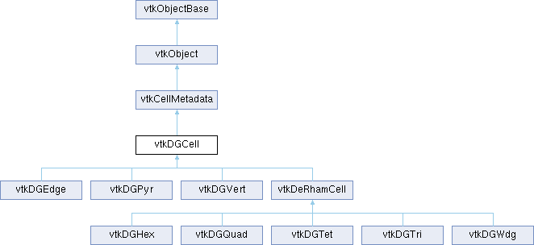

|
Etrek
|
|
Etrek
|
Base class for a discontinuous Galerkin cells of all shapes. More...
#include <vtkDGCell.h>

Classes | |
| struct | Source |
| Records describing the source arrays for cells or cell-sides. More... | |
Public Types | |
| enum | Shape : int { Vertex , Edge , Triangle , Quadrilateral , Tetrahedron , Hexahedron , Wedge , Pyramid , None } |
| All possible shapes for DG cells. More... | |
| using | OperatorMap |
| Public Types inherited from vtkCellMetadata | |
| using | CellTypeId = vtkStringToken::Hash |
| using | DOFType = vtkStringToken |
| using | MetadataConstructor = std::function<vtkSmartPointer<vtkCellMetadata>(vtkCellGrid*)> |
| using | ConstructorMap = std::unordered_map<vtkStringToken, MetadataConstructor> |
Public Member Functions | |
| vtkTypeMacro (vtkDGCell, vtkCellMetadata) | |
| vtkInheritanceHierarchyOverrideMacro (vtkDGCell) | |
| void | PrintSelf (ostream &os, vtkIndent indent) override |
| Source & | GetCellSpec () |
| Provide access to the connectivity array used to define cells of this type. | |
| std::vector< Source > & | GetSideSpecs () |
| Provide access to the (cellId,sideId)-arrays used to define side-cells of this type. | |
| const Source & | GetCellSource (int sideType=-1) const |
| Provide access to cell specifications in a uniform way (for both cells and sides). | |
| Source & | GetCellSource (int sideType=-1) |
| std::size_t | GetNumberOfCellSources () const |
| Python-accessible method to identify number of cell sources. | |
| vtkDataArray * | GetCellSourceConnectivity (int sideType=-1) const |
| vtkDataArray * | GetCellSourceNodalGhostMarks (int sideType=-1) const |
| vtkIdType | GetCellSourceOffset (int sideType=-1) const |
| bool | GetCellSourceIsBlanked (int sideType=-1) const |
| Shape | GetCellSourceShape (int sideType=-1) const |
| int | GetCellSourceSideType (int sideType=-1) const |
| int | GetCellSourceSelectionType (int sideType=-1) const |
| vtkIdType | GetNumberOfCells () override |
| Return the number of cells (and sides) of this type present in this cell grid. | |
| virtual bool | IsInside (const vtkVector3d &rst, double tolerance=1e-6)=0 |
| virtual Shape | GetShape () const =0 |
| Return the topological shape of this cell or side type. | |
| virtual int | GetDimension () const |
| Return the parametric dimension of this cell type (0, 1, 2, or 3). | |
| virtual int | GetNumberOfCorners () const |
| Return the number of corner points for this cell type. | |
| virtual const std::array< double, 3 > & | GetCornerParameter (int corner) const =0 |
| virtual vtkVector3d | GetParametricCenterOfSide (int sideId) const |
| virtual int | GetNumberOfSideTypes () const =0 |
| virtual std::pair< int, int > | GetSideRangeForType (int sideType) const =0 |
| int * | GetSideRangeForSideType (int sideType) VTK_SIZEHINT(2) |
| A python-wrapped version of GetSideRangeForType. | |
| virtual std::pair< int, int > | GetSideRangeForDimension (int dimension) const |
| int * | GetSideRangeForSideDimension (int sideDimension) VTK_SIZEHINT(2) |
| A python-wrapped version of GetSideRangeForDimension. | |
| virtual int | GetNumberOfSidesOfDimension (int dimension) const =0 |
| virtual Shape | GetSideShape (int side) const =0 |
| virtual int | GetSideTypeForShape (Shape s) const |
| virtual const std::vector< vtkIdType > & | GetSideConnectivity (int side) const =0 |
| virtual const std::vector< vtkIdType > & | GetSidesOfSide (int side) const =0 |
| virtual vtkTypeFloat32Array * | GetReferencePoints () const =0 |
| virtual vtkTypeInt32Array * | GetSideConnectivity () const =0 |
| virtual vtkTypeInt32Array * | GetSideOffsetsAndShapes () const =0 |
| void | FillReferencePoints (vtkTypeFloat32Array *arr) const |
| Fill the passed array with the parametric coordinates of all the element's corners. | |
| void | FillSideConnectivity (vtkTypeInt32Array *arr) const |
| Fill the passed array with the connectivity (point IDs) of all the element's sides. | |
| void | FillSideOffsetsAndShapes (vtkTypeInt32Array *arr) const |
| vtkCellGridResponders::TagSet | GetAttributeTags (vtkCellAttribute *attribute, bool inheritedTypes=false) |
| vtkDGOperatorEntry | GetOperatorEntry (vtkStringToken opName, const vtkCellAttribute::CellTypeInfo &attributeInfo) |
| Return an operator entry. | |
| void | ShallowCopy (vtkCellMetadata *other) override |
| void | DeepCopy (vtkCellMetadata *other) override |
| Public Member Functions inherited from vtkCellMetadata | |
| vtkTypeMacro (vtkCellMetadata, vtkObject) | |
| vtkInheritanceHierarchyBaseMacro (vtkCellMetadata) | |
| CellTypeId | Hash () |
| virtual bool | SetCellGrid (vtkCellGrid *parent) |
| vtkGetObjectMacro (CellGrid, vtkCellGrid) | |
| Return the parent vtkCellGrid that owns this instance (or nullptr). | |
| bool | Query (vtkCellGridQuery *query) |
| virtual void | ShallowCopy (vtkCellMetadata *vtkNotUsed(other)) |
| virtual void | DeepCopy (vtkCellMetadata *vtkNotUsed(other)) |
| vtkCellGridResponders * | GetCaches () |
| Public Member Functions inherited from vtkObject | |
| vtkBaseTypeMacro (vtkObject, vtkObjectBase) | |
| virtual void | DebugOn () |
| virtual void | DebugOff () |
| bool | GetDebug () |
| void | SetDebug (bool debugFlag) |
| virtual void | Modified () |
| virtual vtkMTimeType | GetMTime () |
| void | PrintSelf (ostream &os, vtkIndent indent) override |
| void | RemoveObserver (unsigned long tag) |
| void | RemoveObservers (unsigned long event) |
| void | RemoveObservers (const char *event) |
| void | RemoveAllObservers () |
| vtkTypeBool | HasObserver (unsigned long event) |
| vtkTypeBool | HasObserver (const char *event) |
| vtkTypeBool | InvokeEvent (unsigned long event) |
| vtkTypeBool | InvokeEvent (const char *event) |
| std::string | GetObjectDescription () const override |
| unsigned long | AddObserver (unsigned long event, vtkCommand *, float priority=0.0f) |
| unsigned long | AddObserver (const char *event, vtkCommand *, float priority=0.0f) |
| vtkCommand * | GetCommand (unsigned long tag) |
| void | RemoveObserver (vtkCommand *) |
| void | RemoveObservers (unsigned long event, vtkCommand *) |
| void | RemoveObservers (const char *event, vtkCommand *) |
| vtkTypeBool | HasObserver (unsigned long event, vtkCommand *) |
| vtkTypeBool | HasObserver (const char *event, vtkCommand *) |
| template<class U, class T> | |
| unsigned long | AddObserver (unsigned long event, U observer, void(T::*callback)(), float priority=0.0f) |
| template<class U, class T> | |
| unsigned long | AddObserver (unsigned long event, U observer, void(T::*callback)(vtkObject *, unsigned long, void *), float priority=0.0f) |
| template<class U, class T> | |
| unsigned long | AddObserver (unsigned long event, U observer, bool(T::*callback)(vtkObject *, unsigned long, void *), float priority=0.0f) |
| vtkTypeBool | InvokeEvent (unsigned long event, void *callData) |
| vtkTypeBool | InvokeEvent (const char *event, void *callData) |
| virtual void | SetObjectName (const std::string &objectName) |
| virtual std::string | GetObjectName () const |
| Public Member Functions inherited from vtkObjectBase | |
| const char * | GetClassName () const |
| virtual vtkTypeBool | IsA (const char *name) |
| virtual vtkIdType | GetNumberOfGenerationsFromBase (const char *name) |
| virtual void | Delete () |
| virtual void | FastDelete () |
| void | InitializeObjectBase () |
| void | Print (ostream &os) |
| void | Register (vtkObjectBase *o) |
| virtual void | UnRegister (vtkObjectBase *o) |
| int | GetReferenceCount () |
| void | SetReferenceCount (int) |
| bool | GetIsInMemkind () const |
| virtual void | PrintHeader (ostream &os, vtkIndent indent) |
| virtual void | PrintTrailer (ostream &os, vtkIndent indent) |
| virtual bool | UsesGarbageCollector () const |
Static Public Member Functions | |
| static int | GetShapeCornerCount (Shape shape) |
| static int | GetShapeDimension (Shape shape) |
| static vtkStringToken | GetShapeName (Shape shape) |
| static Shape | GetShapeEnum (vtkStringToken shapeName) |
| static OperatorMap & | GetOperators () |
| Return a map of operators registered for vtkDGCell and its subclasses. | |
| Static Public Member Functions inherited from vtkCellMetadata | |
| template<typename Subclass> | |
| static bool | RegisterType () |
| template<typename Subclass> | |
| static vtkSmartPointer< Subclass > | NewInstance (vtkCellGrid *grid=nullptr) |
| static vtkSmartPointer< vtkCellMetadata > | NewInstance (vtkStringToken className, vtkCellGrid *grid=nullptr) |
| static std::unordered_set< vtkStringToken > | CellTypes () |
| static vtkCellGridResponders * | GetResponders () |
| Return the set of registered responder types. | |
| static void | ClearResponders () |
| Clear all of the registered responders. | |
| Static Public Member Functions inherited from vtkObject | |
| static vtkObject * | New () |
| static void | BreakOnError () |
| static void | SetGlobalWarningDisplay (vtkTypeBool val) |
| static void | GlobalWarningDisplayOn () |
| static void | GlobalWarningDisplayOff () |
| static vtkTypeBool | GetGlobalWarningDisplay () |
| Static Public Member Functions inherited from vtkObjectBase | |
| static vtkTypeBool | IsTypeOf (const char *name) |
| static vtkIdType | GetNumberOfGenerationsFromBaseType (const char *name) |
| static vtkObjectBase * | New () |
| static void | SetMemkindDirectory (const char *directoryname) |
| static bool | GetUsingMemkind () |
Protected Attributes | |
| Source | CellSpec |
| std::vector< Source > | SideSpecs |
| Protected Attributes inherited from vtkCellMetadata | |
| vtkCellGrid * | CellGrid { nullptr } |
| Protected Attributes inherited from vtkObject | |
| bool | Debug |
| vtkTimeStamp | MTime |
| vtkSubjectHelper * | SubjectHelper |
| std::string | ObjectName |
| Protected Attributes inherited from vtkObjectBase | |
| std::atomic< int32_t > | ReferenceCount |
| vtkWeakPointerBase ** | WeakPointers |
Additional Inherited Members | |
| Protected Member Functions inherited from vtkObject | |
| void | RegisterInternal (vtkObjectBase *, vtkTypeBool check) override |
| void | UnRegisterInternal (vtkObjectBase *, vtkTypeBool check) override |
| void | InternalGrabFocus (vtkCommand *mouseEvents, vtkCommand *keypressEvents=nullptr) |
| void | InternalReleaseFocus () |
| Protected Member Functions inherited from vtkObjectBase | |
| virtual void | ReportReferences (vtkGarbageCollector *) |
| vtkObjectBase (const vtkObjectBase &) | |
| void | operator= (const vtkObjectBase &) |
| Static Protected Member Functions inherited from vtkCellMetadata | |
| static ConstructorMap & | Constructors () |
| Static Protected Member Functions inherited from vtkObjectBase | |
| static vtkMallocingFunction | GetCurrentMallocFunction () |
| static vtkReallocingFunction | GetCurrentReallocFunction () |
| static vtkFreeingFunction | GetCurrentFreeFunction () |
| static vtkFreeingFunction | GetAlternateFreeFunction () |
Base class for a discontinuous Galerkin cells of all shapes.
This class exists to offer each shape's parameterization via a uniform API.
All DG cells have shapes that can be described by corner points in a reference (parametric) coordinate system. Sides (boundaries) of the element of any dimension can be fetched as offsets into the list of corners. You can also obtain a list of the coordinates in parametric space of all the corner points.
| using vtkDGCell::OperatorMap |
A map holding operators that evaluate DG cells.
Operators currently include "Basis" and "BasisGradient" to evaluate the polynomial basis functions for a cell-attribute. But in the future this may also include operators such as "Curl", "Divergence", and higher-order derivative operators.
Besides operators being indexed on their purpose (the operator name), they are indexed on the function space in which they live (such as the space of nodal functions, edge-centered functions, face-centered functions, constant functions, etc.), the polynomial basis inside the function space and its order are also indexed.
vtkDGInterpolateCalculator and other query-responders should use this map along with vtkDGOperation to perform interpolation or other work requiring basis-function computation.
| enum vtkDGCell::Shape : int |
All possible shapes for DG cells.
| void vtkDGCell::FillSideOffsetsAndShapes | ( | vtkTypeInt32Array * | arr | ) | const |
Fill the passed array with tuples of (1) offsets into the side-connectivity and (2) shapes for each type of side. Note that the final tuple contains the total size of the offset array and a shape corresponding to the element itself.
Each element's vertex side-connectivity (the penultimate offset) can also be used as the connectivity for the element's connectivity.
Simple example: a vtkDGTri has 3 tuples:
Complex example: a vtkDGWedge has 5 tuples:
Note that the wedge has multiple 2-d sides (both quadilaterals and triangles).
| vtkCellGridResponders::TagSet vtkDGCell::GetAttributeTags | ( | vtkCellAttribute * | attribute, |
| bool | inheritedTypes = false ) |
A convenience function to fetch attribute-calculator tags for an attribute.
Query-responders are ultimately responsible for providing tags when fetching a attribute-calculator, but this method is a convenience since many responders will follow the same pattern.
Pass inheritedTypes as true when passing the result to vtkCellGridResponders::AttributeCalculator() (so that any responder which applies to an inherited class will be used to find a calculator). Pass inheritedTypes as false when using the result to register a calculator (so that the calculator is not made available to parent classes of this cell type).
| vtkDataArray * vtkDGCell::GetCellSourceConnectivity | ( | int | sideType = -1 | ) | const |
Python-accessible methods to fetch cell source information.
In C++, you should simply call GetCellSource(sideType) and access the ivar.
|
pure virtual |
Return the coordinates of the reference element's corner vertex.
Any well-formed element in world coordinates can be mapped to its reference element by transforming its corner points to these; this mapping is frequently used to visualize and analyze elements.
Implemented in vtkDGEdge, vtkDGHex, vtkDGPyr, vtkDGQuad, vtkDGTet, vtkDGTri, vtkDGVert, and vtkDGWdg.
|
inlinevirtual |
|
overridevirtual |
Return the number of cells (and sides) of this type present in this cell grid.
Reimplemented from vtkCellMetadata.
|
pure virtual |
Return the number of boundaries this type of cell has of a given dimension.
DG cells can be thought of as CW-complex cells; they are tuples of corner points which represent an open point set plus its closure decomposed into a union of open sets of lower dimension. For example, a hexahedron is an 8-tuple of corner points representing an underlying space shaped as an open, rectangular prism plus six 4-tuples representing its quadrilateral faces, plus twelve 2-tuples representing its edges, plus 8 1-tuples representing its corners. Thus, a hexahedron has 6 + 12 + 8 = 26 sides (plus its interior).
Passing a dimension of -1 will return 1 side; DG cells use a -1-dimensional side to indicate an entire cell should be treated as a side. This is useful for subsetting cells without re-writing the arrays holding connectivity and field values; it also allows a vtkDGCell instance to hold both sides of input cells mixed with a subset of the input cells. For example, given 3 triangles as input, generating an output with 1 input triangle unchanged and edges or vertices from the other two triangles requires per-cell blanking or subsetting of cells.
Implemented in vtkDGEdge, vtkDGHex, vtkDGPyr, vtkDGQuad, vtkDGTet, vtkDGTri, vtkDGVert, and vtkDGWdg.
|
pure virtual |
|
virtual |
Return the parametric center of a cell or its side.
Pass -1 for side if you want the cell's center. Otherwise, pass the side ID.
This method simply averages corner-point coordinates. It is not fast, since it averages values each time it is called. If you need to reuse this information, you are responsible for caching it locally.
|
pure virtual |
Return a singleton array initialized with the reference-cell's corner point coordinates.
When implementing a subclass, call FillReferencePoints() in your override. This should always return the same vtkTypeFloat32Array each time so that the array is only uploaded to the GPU once.
Implemented in vtkDGEdge, vtkDGHex, vtkDGPyr, vtkDGQuad, vtkDGTet, vtkDGTri, vtkDGVert, and vtkDGWdg.
|
pure virtual |
|
static |
Given a string description of a cell shape, return the DG equivalent enum.
Note that this also converts IOSS shape names to DG enums, so there are additional cases to handle spheres as points, springs as lines, etc.
|
pure virtual |
Return a singleton array initialized with point-ids of each side's corners. To make use of this array, you should also call GetSideOffsetsAndShapes() and GetShapeCornerCount().
When implementing a subclass, call FillSideConnectivity() in your override. This should always return the same vtkTypeInt32Array each time so that the array is only uploaded to the GPU once.
Implemented in vtkDGEdge, vtkDGHex, vtkDGPyr, vtkDGQuad, vtkDGTet, vtkDGTri, vtkDGVert, and vtkDGWdg.
|
pure virtual |
Return the connectivity of the given side.
The side connectivity is a vector holding the indexes of corner-points of the side into the connectivity vector of this cell.
Passing a side of -1 should return the connectivity of the cell's interior (a vector of the counting numbers from 0 to this->GetNumberOfCorners()). This feature is used when rendering cells of dimension 2 or lower.
Implemented in vtkDGEdge, vtkDGHex, vtkDGPyr, vtkDGQuad, vtkDGTet, vtkDGTri, vtkDGVert, and vtkDGWdg.
|
pure virtual |
Return a singleton array initialized with 2-tuples of (offset, shape) values.
When implementing a subclass, call FillSideOffsetsAndShapes() in your override. This should always return the same vtkTypeInt32Array each time so that the array is only uploaded to the GPU once.
Implemented in vtkDGEdge, vtkDGHex, vtkDGPyr, vtkDGQuad, vtkDGTet, vtkDGTri, vtkDGVert, and vtkDGWdg.
|
virtual |
Return the range of side IDs for all sides of the given dimension.
An invalid range (side.first > side.second) is returned if no sides of the given dimension exist.
|
pure virtual |
Return the range of sides of the ii-th type, where ii is in [-2, this->GetNumberOfSideTypes()[.
The returned pair of integers is a half-open interval of side IDs. The difference between the returned values is the number of sides of sideType.
Values of ii 0 and above are for "strict" sides (i.e., sides whose dimension is less than the cell's dimension). If you pass ii = -2, this will return the total number of strict sides of all types. If you pass ii = -1, this will return an entry for the cell's "self" type [-1,0[.
Example: a tetrahedron will return the following:
Side types are ordered from highest dimension to lowest as ii increases. Note that it is possible to have multiple types of side that have the same dimension. For example, wedges and pyramids each have triangle and quadrilateral sides (of dimension 2, but of different types).
Implemented in vtkDGEdge, vtkDGHex, vtkDGPyr, vtkDGQuad, vtkDGTet, vtkDGTri, vtkDGVert, and vtkDGWdg.
|
pure virtual |
For a given side, return its cell shape.
The sides of a vtkDGCell are always ordered from highest dimension to lowest. For example, a hexahedron's quadrilateral sides are numbered 0–5, its line sides are numbered 6–17, and its corner point sides are numbered 18–25. Sometimes, the interior of the element is considered a side labeled -1.
Implemented in vtkDGEdge, vtkDGHex, vtkDGPyr, vtkDGQuad, vtkDGTet, vtkDGTri, vtkDGVert, and vtkDGWdg.
|
pure virtual |
Return a vector of side IDs given an input side ID.
Passing a side of -1 will return the sides of the element itself. The returned values are not corner-point IDs; they are side IDs. You can call GetSideConnectivity on each entry of the returned vector to obtain corner-point IDs.
Implemented in vtkDGEdge, vtkDGHex, vtkDGPyr, vtkDGQuad, vtkDGTet, vtkDGTri, vtkDGVert, and vtkDGWdg.
|
virtual |
Return the side type index for the given shape (or -1).
This method simply loops over the cell's side types until it finds one of the proper shape.
|
pure virtual |
Return true if the parametric coordinates (rst) lie inside the reference cell or its closure and false otherwise.
The tolerance specifies a margin that should be included as part of the reference cell's interior to account for numerical imprecision.
Implemented in vtkDGEdge, vtkDGHex, vtkDGPyr, vtkDGQuad, vtkDGTet, vtkDGTri, vtkDGVert, and vtkDGWdg.
|
overridevirtual |
Methods invoked by print to print information about the object including superclasses. Typically not called by the user (use Print() instead) but used in the hierarchical print process to combine the output of several classes.
Reimplemented from vtkCellMetadata.
Reimplemented in vtkDGEdge, vtkDGHex, vtkDGPyr, vtkDGQuad, vtkDGTet, vtkDGTri, vtkDGVert, and vtkDGWdg.
|
override |
Copy cell-specific data from other into ourselves.
|
protected |
The connectivity array specifying cells. There may be only one Source for all the cells of one type in a vtkCellGrid.
|
protected |
The connectivity array(s) specifying sides. There may be zero or more Source instances for sides in a vtkCellGrid.